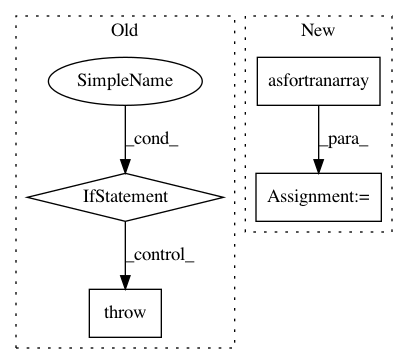

af3357375250903ecb380051915e15ba721c42f4,src/gensim/similarities/docsim.py,MatrixSimilarity,getSimilarities,#MatrixSimilarity#Any#,121
Before Change
vec = matutils.sparse2full(doc, self.numFeatures)
vec.shape = (vec.size, 1)
if vec.shape != (self.corpus.shape[1], 1):
raise ValueError("vector shape mismatch; expected %s, got %s" %
((self.corpus.shape[1], 1,), vec.shape))
// compute cosine similarity against every other document in the collection
allSims = self.corpus * vec // N x T * T x 1 = N x 1
allSims = list(allSims.flat) // convert to plain python list
assert len(allSims) == self.corpus.shape[0] // make sure no document got lost!
return allSims
After Change
vec = doc
else:
vec = matutils.sparse2full(doc, self.numFeatures)
vec = numpy.asfortranarray(vec, order = "F", dtype = self.corpus.dtype).reshape(self.numFeatures, 1)
// compute cosine similarity against every other document in the collection
gemv, = scipy.linalg.get_blas_funcs(("gemv",), (self.u,))
allSims = gemv(self.corpus, vec) // N x T * T x 1 = N x 1
In pattern: SUPERPATTERN
Frequency: 3
Non-data size: 4
Instances
Project Name: RaRe-Technologies/gensim
Commit Name: af3357375250903ecb380051915e15ba721c42f4
Time: 2010-07-31
Author: radimrehurek@seznam.cz
File Name: src/gensim/similarities/docsim.py
Class Name: MatrixSimilarity
Method Name: getSimilarities
Project Name: RaRe-Technologies/gensim
Commit Name: e20d7b28bb811000edd0790fb72df9e68875a063
Time: 2010-07-31
Author: piskvorky@92d0401f-a546-4972-9173-107b360ed7e5
File Name: src/gensim/similarities/docsim.py
Class Name: MatrixSimilarity
Method Name: getSimilarities
Project Name: librosa/librosa
Commit Name: b2e82574eb7e7292741ece09ec9eb286e9ea4168
Time: 2020-05-22
Author: bmcfee@users.noreply.github.com
File Name: librosa/util/utils.py
Class Name:
Method Name: frame